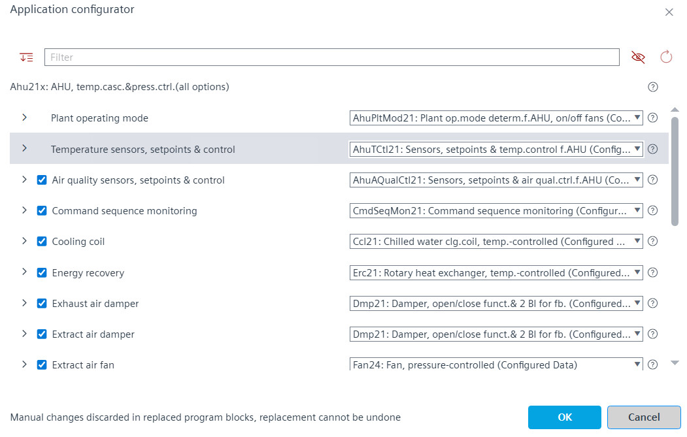

Changing the plant configuration
Modifying the plant configuration includes the following:
- Replacing the functionality with alternatives
- Removing non-required options.
- Go to Engineering > Plants and select the Configurations tab.
- Select the configuration file.
- Right-click the configuration file and select Configure.
- The Application configurator dialog box opens.

- Configure the modules by de-selecting the unused options or selecting an alternative in the drop-down list.
Note: Assigned I/O data points are removed when a function is deselected. - (Optional) Perform the following actions as required:
- Click to expand the options and click to contract the options.
- Use the Filter field to filter options and select alternatives from the drop-down.
- Click to view the help of the selected alternative.
- Click to view the latest changes in the options.
- Click to display the checked options only.
- Click to display all the options (checked and unchecked).
- Click OK.
- The system replaces the modules.
- The system removes the deselected options.